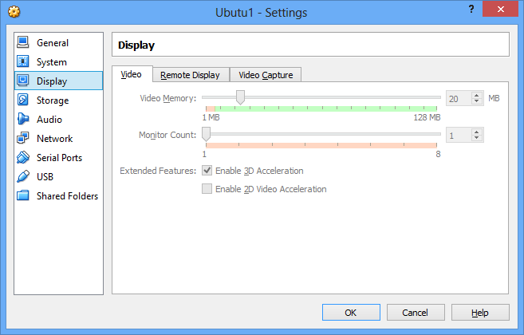

Slow Ubuntu operation under VirtualBox.
Ubuntu 13.04 under VirtualBox is running very slowly.
Windows are opening or closing very slowly.
The problem is caused by slow opeartion of the new Unity desktop that is part of Ubuntu from 12.04 distribution.

You can also check that Hardware virtualization is enabled in the PC BIOS settings.